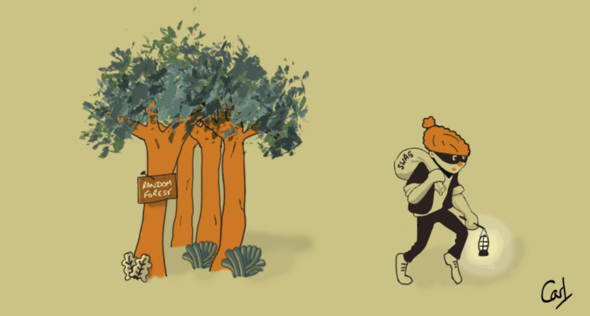
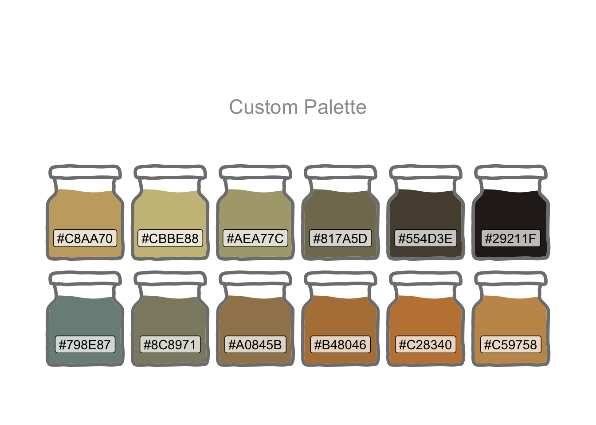
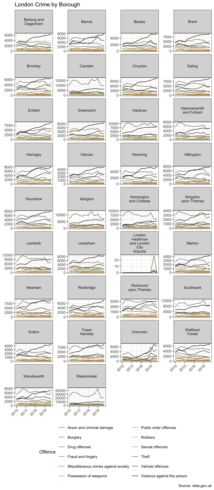
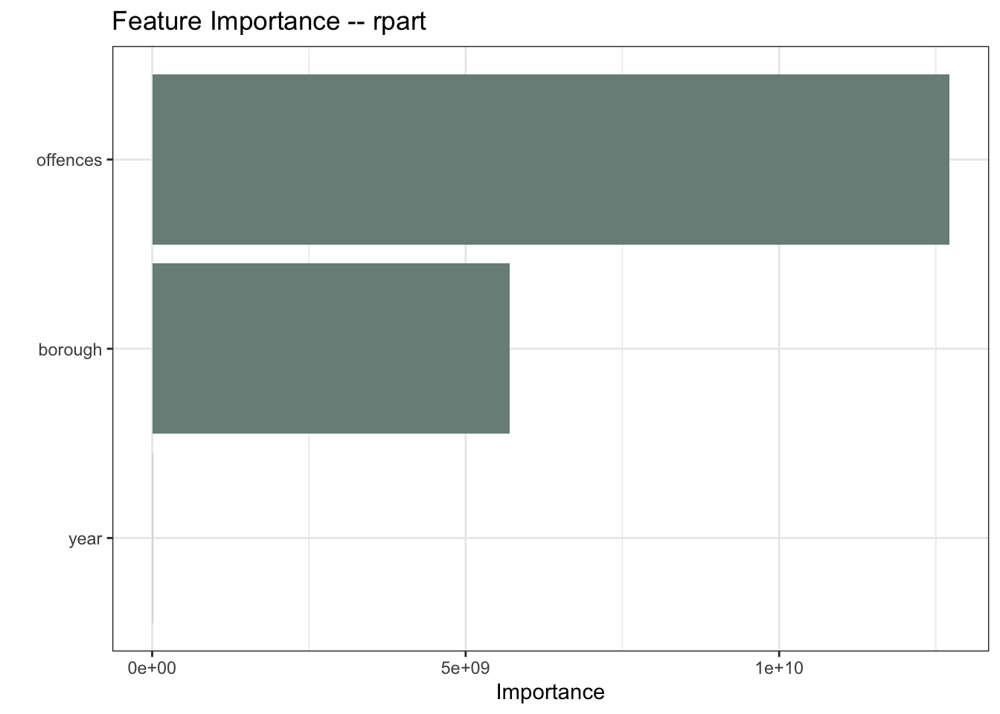
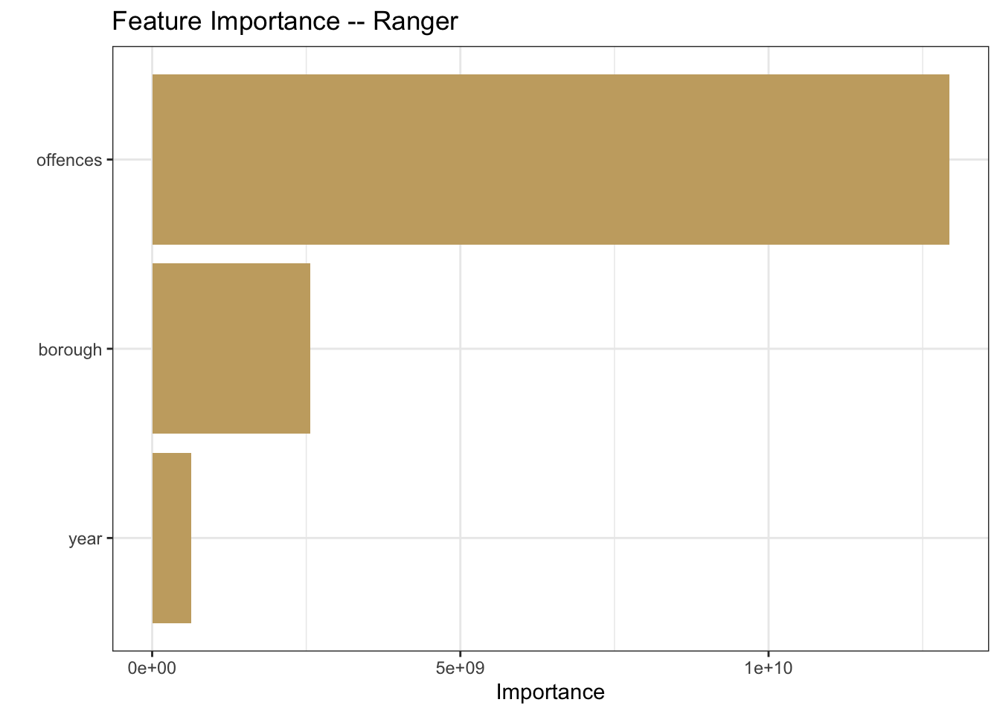
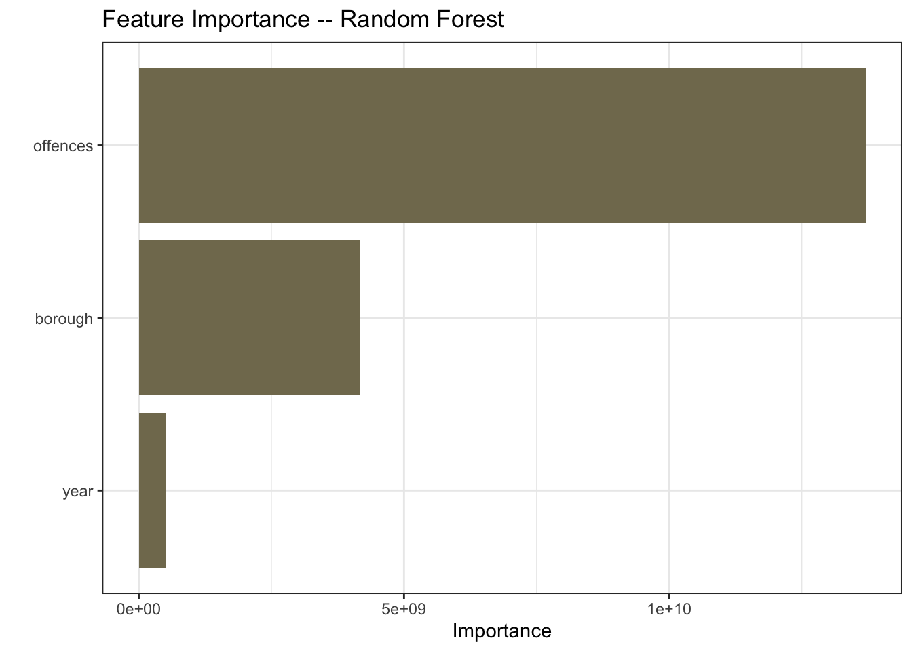
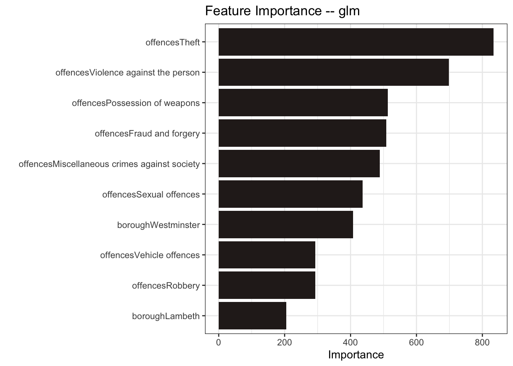
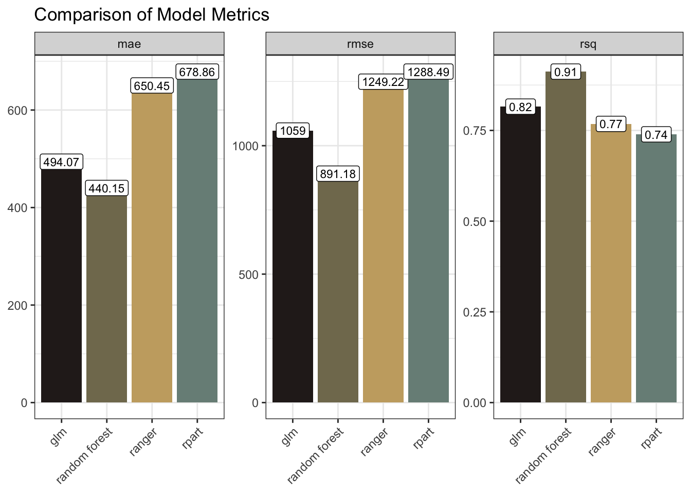
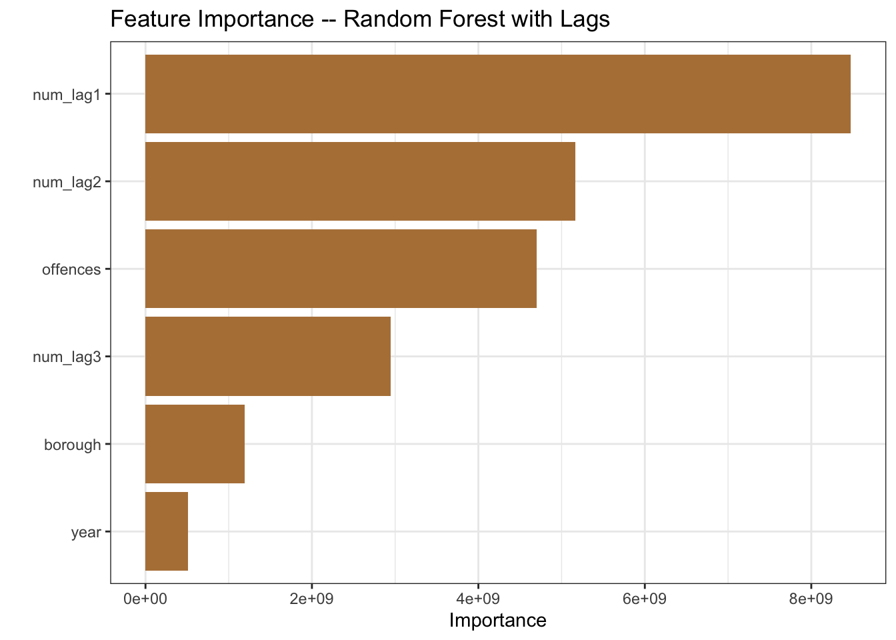
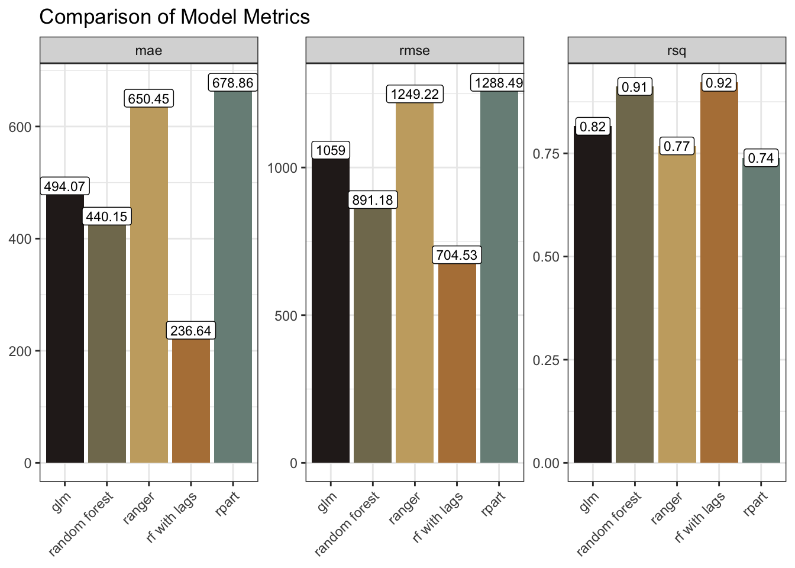

library(conflicted)
library(tidyverse)
conflict_prefer_all("dplyr", quiet = TRUE)
library(tidymodels)
library(janitor)
library(scales)
library(vip)
library(poissonreg)
library(ggfoundry)
library(usedthese)
conflict_scout()Criminal Goings-on in a Random Forest
R
machine learning
Criminal goings-on in a random forest and predictions with tree-based and glm models

When first posted in 2018 this project used the caret package to model crime in London. Since then, the newer tidymodels(Kuhn and Wickham 2020) framework, consistent with tidy data principles, has rapidly evolved.
This custom palette was created in Adobe Colour as the basis for the feature image above and with the hex codes loaded for use in ggplot. colorRampPalette enables interpolation of an extended set of colours to support the number of offence types.
theme_set(theme_bw())
pal_name <- "Custom Palette"
pal <- c("#798E87", "#C27D38", "#CCC591", "#29211F")
pal12 <- colorRampPalette(pal)(12)
display_palette(pal12, pal_name)
# MPS Borough Level Crime (Historical).csv
url <- str_c(
"https://data.london.gov.uk/download/recorded_crime_summary/",
"a1b36c68-cd08-4a8a-99c2-c2313165b744/",
"MPS%20Borough%20Level%20Crime%20%28Historical%29.csv"
)
crime_df <-
read_csv(url, show_col_types = FALSE) |>
clean_names() |>
pivot_longer(starts_with("x"), names_to = "year", values_to = "number_of_offences") |>
mutate(
year = str_sub(year, 2, 5) |> as.numeric(),
major_text = str_to_sentence(major_text)) |>
filter(year != 2022) |> # partial year
rename(offences = major_text, borough = borough_name) |>
summarise(number_of_offences = sum(number_of_offences),
.by = c(year, borough, offences))A faceted plot is one way to get a sense of the data.
crime_df |>
mutate(borough = str_wrap(borough, 11)) |>
ggplot(aes(year, number_of_offences,
colour = offences, group = offences)) +
geom_line() +
facet_wrap(~borough, scales = "free_y", ncol = 4) +
labs(
x = NULL, y = NULL, title = "London Crime by Borough",
colour = "Offence", caption = "Source: data.gov.uk"
) +
scale_colour_manual(values = pal12) +
guides(colour = guide_legend(nrow = 6, size = 4)) +
theme(
legend.position = "bottom",
axis.text.x = element_text(angle = 45, hjust = 1)
)
Visualising data in small multiples using facet_wrap or facet_grid can be a useful way to explore data. When there are a larger number of these however, as we’re starting to see in the example above, there are alternative techniques one can employ. This is explored in Seeing the Wood for the Trees.
There are 12 types of offence in 34 boroughs. The dataset covers the period 2010 to 2021.
The faceted plot hints at a potential interaction between borough and type of offence. In more affluent boroughs, and/or those attracting greater visitor numbers, e.g. Westminster and Kensington & Chelsea, “theft and handling” is the more dominant category. In Lewisham, for example, “violence against the person” exhibits higher counts. However, for the purpose of this basic model comparison, I’m going to set aside the potential interaction term.
Before modelling, I’ll visualise the dependent variable against each independent variable.
crime_df |>
summarise(number_of_offences = sum(number_of_offences),
.by = c(offences, borough)) |>
mutate(
median_offences = median(number_of_offences),
offences = str_wrap(offences, 20),
.by = offences
) |>
ggplot(aes(fct_reorder(offences, median_offences), number_of_offences)) +
geom_boxplot(fill = pal[1]) +
scale_y_log10(labels = label_number(scale_cut = cut_short_scale())) +
labs(
x = NULL, y = NULL,
title = "Number of Offences by Type",
caption = "Source: data.gov.uk"
) +
theme(axis.text.x = element_text(angle = 45, hjust = 1))
crime_df |>
summarise(number_of_offences = sum(number_of_offences),
.by = c(offences, borough)) |>
mutate(
median_offences = median(number_of_offences),
offences = str_wrap(offences, 10),
.by = borough
) |>
ggplot(aes(number_of_offences, fct_reorder(borough, median_offences))) +
geom_boxplot(fill = pal[1]) +
scale_x_log10(labels = label_number(scale_cut = cut_short_scale())) +
labs(
x = NULL, y = NULL,
title = "Number of Offences by Borough",
caption = "Source: data.gov.uk"
)
The offences and borough variables show significant variation in crime counts. And there is also evidence of a change over time.
crime_df |>
summarise(number_of_offences = sum(number_of_offences), .by = year) |>
ggplot(aes(year, number_of_offences)) +
geom_line(colour = pal[4], linetype = "dashed") +
geom_smooth(colour = pal[2]) +
scale_y_continuous(labels = label_number(scale_cut = cut_short_scale())) +
labs(
x = NULL, y = NULL,
title = "Number of Offences by Year",
caption = "Source: data.gov.uk"
)
I’ll separate out some test data so I can compare the performance of the models on data they have not see during model training.
set.seed(123)
data_split <-
crime_df |>
initial_split(strata = offences)
crime_train <- data_split |>
training()
crime_test <- data_split |>
testing()I’m using the recipes package to establish the role of the variables. Alternatively I could have used a formula-based approach, i.e. number_of_offences ~ borough + offences + year.
Whilst borough and offences are nominal, I’m not creating any dummy variables since I intend to use tree-based models which will anyway branch left and right based on groups of values.
crime_recipe <-
crime_train |>
recipe() |>
update_role(number_of_offences, new_role = "outcome") |>
update_role(-has_role("outcome"), new_role = "predictor")
summary(crime_recipe)| variable | type | role | source |
|---|---|---|---|
| year | double , numeric | predictor | original |
| borough | string , unordered, nominal | predictor | original |
| offences | string , unordered, nominal | predictor | original |
| number_of_offences | double , numeric | outcome | original |
I’ll start with a Recursive Partitioning And Regression Trees (rpart) model. The feature importance plot tells me which variables are having the biggest influence on the model. The type of offence is the most important predictor in the rpart model, followed by the location of the offences. This makes intuitive sense.
Clearly there is a temporal component too otherwise there would be no trend.
rp_model <-
decision_tree() |>
set_engine("rpart") |>
set_mode("regression")
rp_wflow <- workflow() |>
add_recipe(crime_recipe) |>
add_model(rp_model)
rp_fit <- rp_wflow |>
fit(crime_train)
rp_fit |>
extract_fit_parsnip() |>
vip(aesthetics = list(fill = pal[1])) +
labs(title = "Feature Importance -- rpart")
rp_results <- rp_fit |>
augment(crime_test) |>
mutate(model = "rpart")Ranger is an implementation of random forests or recursive partitioning that, according to the documentation, is particularly suited to high dimensional data. My data is not high-dimensional, but let’s throw it into the mix.
ranger_model <-
rand_forest() |>
set_engine("ranger", importance = "impurity") |>
set_mode("regression")
ranger_wflow <- workflow() |>
add_recipe(crime_recipe) |>
add_model(ranger_model)
ranger_fit <- ranger_wflow |>
fit(crime_train)
ranger_fit |>
extract_fit_parsnip() |>
vip(aesthetics = list(fill = pal[3])) +
labs(title = "Feature Importance -- Ranger")
ranger_results <- ranger_fit |>
augment(crime_test) |>
mutate(model = "ranger")And of course my project title would make little sense without a Random Forest.
rf_model <-
rand_forest() |>
set_engine("randomForest") |>
set_mode("regression")
rf_wflow <- workflow() |>
add_recipe(crime_recipe) |>
add_model(rf_model)
rf_fit <- rf_wflow |>
fit(crime_train)
rf_fit |>
extract_fit_parsnip() |>
vip(aesthetics = list(fill = "grey60")) +
labs(title = "Feature Importance -- Random Forest")
rf_results <- rf_fit |>
augment(crime_test) |>
mutate(model = "random forest")For good measure, I’ll also include a generalized linear model (glm)
poisson_model <-
poisson_reg() |>
set_engine("glm") |>
set_mode("regression")
poisson_wflow <- workflow() |>
add_recipe(crime_recipe) |>
add_model(poisson_model)
poisson_fit <- poisson_wflow |>
fit(crime_train)
poisson_fit |>
extract_fit_parsnip() |>
vip(aesthetics = list(fill = pal[4])) +
labs(title = "Feature Importance -- glm")
poisson_results <- poisson_fit |>
augment(crime_test) |>
mutate(model = "glm")The Random Forest and the glm models performed the best here with the lower RMSE / MAE and higher R Squared.
model_results <-
rp_results |>
bind_rows(ranger_results) |>
bind_rows(rf_results) |>
bind_rows(poisson_results) |>
group_by(model) |>
metrics(truth = number_of_offences, estimate = .pred)
model_results |>
ggplot(aes(model, .estimate, fill = model)) +
geom_col() +
geom_label(aes(label = round(.estimate, 2)), size = 3, fill = "white") +
facet_wrap(~ .metric, scales = "free_y") +
scale_fill_manual(values = as.character(pal[c(4, 5, 3, 1)])) +
labs(x = NULL, y = NULL, title = "Comparison of Model Metrics") +
theme(axis.text.x = element_text(angle = 45, hjust = 1),
legend.position = "none")
Another way of approaching all this would be to use time-series forecasting. This would major on auto-regression, i.e. looking at how the lagged number-of-offences influence future values. And one could further include exogenous data such as, say, the numbers of police. It would be reasonable to expect that increasing police numbers would, in time, lead to decreased crime levels.
I explored time-series in other posts such as Digging Deep, so I won’t go down that path here.
What I could do though is to strengthen my tree-based models above by engineering some additional temporal features. Let’s try that just with the Random Forest to see if it improves the outcome.
temp_df <-
crime_df |>
mutate(num_lag1 = lag(number_of_offences),
num_lag2 = lag(number_of_offences, 2),
num_lag3 = lag(number_of_offences, 3)) |>
drop_na()So, when predicting the number of offences, the model will now additionally consider, for each borough, type of offence and year, the number of offences in each of the three prior years.
set.seed(123)
data_split <-
temp_df |>
initial_split(strata = offences)
temp_train <- data_split |>
training()
temp_test <- data_split |>
testing()
temp_recipe <-
temp_train |>
recipe() |>
update_role(number_of_offences, new_role = "outcome") |>
update_role(-has_role("outcome"), new_role = "predictor")
summary(temp_recipe)| variable | type | role | source |
|---|---|---|---|
| year | double , numeric | predictor | original |
| borough | string , unordered, nominal | predictor | original |
| offences | string , unordered, nominal | predictor | original |
| number_of_offences | double , numeric | outcome | original |
| num_lag1 | double , numeric | predictor | original |
| num_lag2 | double , numeric | predictor | original |
| num_lag3 | double , numeric | predictor | original |
temp_model <-
rand_forest() |>
set_engine("randomForest") |>
set_mode("regression")
temp_wflow <- workflow() |>
add_recipe(temp_recipe) |>
add_model(temp_model)
temp_fit <- temp_wflow |>
fit(temp_train)
temp_fit |>
extract_fit_parsnip() |>
vip(aesthetics = list(fill = pal[2])) +
labs(title = "Feature Importance -- Random Forest with Lags")
temp_results <- temp_fit |>
augment(temp_test) |>
metrics(truth = number_of_offences, estimate = .pred) |>
mutate(model = "rf with lags")The recipe summary includes the three new predictors. And the feature importance plot shows the lags playing a larger role in the model than the year variable, so looks like we should anticipate a model improvement.
updated_results <-
model_results |>
bind_rows(temp_results)
updated_results |>
ggplot(aes(model, .estimate, fill = model)) +
geom_col() +
geom_label(aes(label = round(.estimate, 2)), size = 3, fill = "white") +
facet_wrap(~ .metric, scales = "free_y") +
scale_fill_manual(values = as.character(pal[c(4, 5, 3, 2, 1)])) +
labs(x = NULL, y = NULL, title = "Comparison of Model Metrics") +
theme(axis.text.x = element_text(angle = 45, hjust = 1),
legend.position = "none")
The model metrics bear this out. The mae and rmse are markedly smaller, and the rsq marginally improved. We could have tried further lags. We could have tried tweaking some parameters. We could have tried time-series forecasting with, for example a statistical model like ARIMA, or a Neural Network model such as NNETAR.
The best approach would depend upon a more precise definition of the objective. And some trial and error, comparing approaches after more extensive feature-engineering, validation, testing and tuning. For the purposes of this post though I wanted to merely explore some techniques. So I’ll leave it there.
R Toolbox
Summarising below the packages and functions used in this post enables me to separately create a toolbox visualisation summarising the usage of packages and functions across all posts.
used_here()| Package | Function |
|---|---|
| base | as.character[2], as.numeric[1], c[6], library[9], list[5], round[2], set.seed[2], sum[4], summary[2] |
| conflicted | conflict_prefer_all[1], conflict_scout[1] |
| dplyr | bind_rows[4], filter[1], group_by[1], lag[3], mutate[10], rename[1], starts_with[1], summarise[4] |
| forcats | fct_reorder[2] |
| generics | augment[5], fit[5] |
| ggfoundry | display_palette[1] |
| ggplot2 | aes[8], element_text[4], facet_wrap[3], geom_boxplot[2], geom_col[2], geom_label[2], geom_line[2], geom_smooth[1], ggplot[6], guide_legend[1], guides[1], labs[11], scale_colour_manual[1], scale_fill_manual[2], scale_x_log10[1], scale_y_continuous[1], scale_y_log10[1], theme[4], theme_bw[1], theme_set[1] |
| grDevices | colorRampPalette[1] |
| hardhat | extract_fit_parsnip[5] |
| janitor | clean_names[1] |
| parsnip | decision_tree[1], poisson_reg[1], rand_forest[3], set_engine[5], set_mode[5] |
| readr | read_csv[1] |
| recipes | has_role[2], recipe[2], update_role[4] |
| rsample | initial_split[2], testing[2], training[2] |
| scales | cut_short_scale[3], label_number[3] |
| stats | median[2] |
| stringr | str_c[1], str_sub[1], str_to_sentence[1], str_wrap[3] |
| tidyr | drop_na[1], pivot_longer[1] |
| usedthese | used_here[1] |
| vip | vip[5] |
| workflows | add_model[5], add_recipe[5], workflow[5] |
| yardstick | metrics[2] |
References
Kuhn, Max, and Hadley Wickham. 2020. Tidymodels: A Collection of Packages for Modeling and Machine Learning Using Tidyverse Principles. https://www.tidymodels.org.